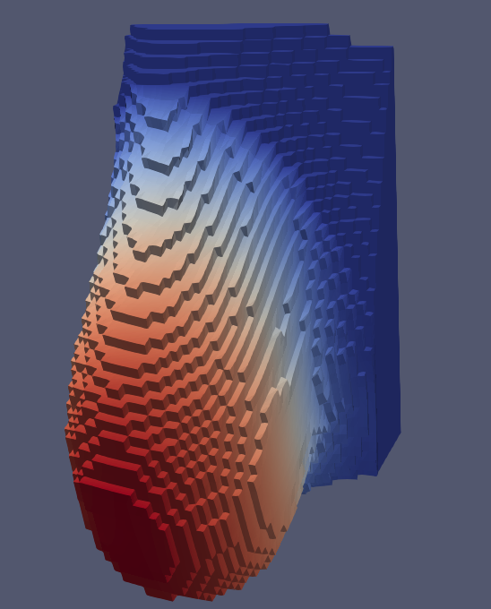

Grado en Ingeniería Informática: TFG
Volver a Ingeniería Informática

Un modelo en elementos finitos para estudiar las deformaciones del tejido mamario
Autor: Jose Antonio Lorencio Abril
Tutor: Ginés García Mateos
Memoria
Presentación